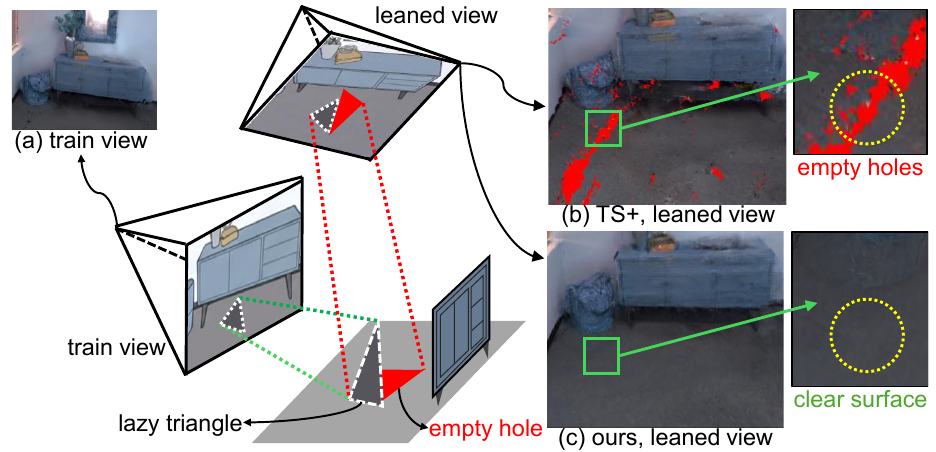
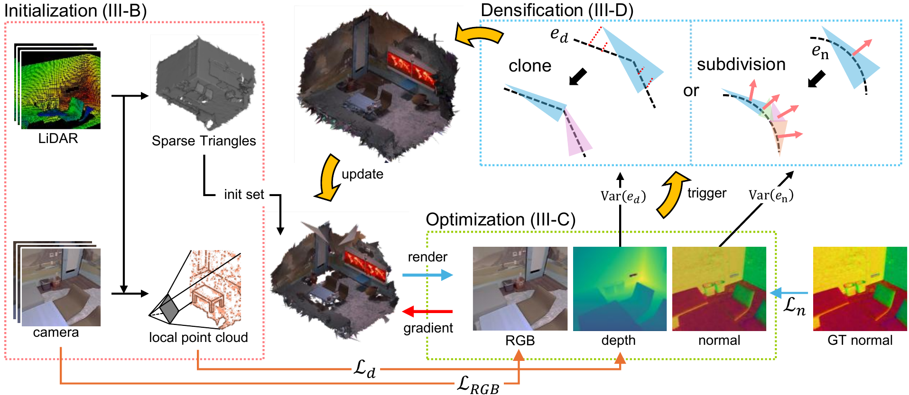
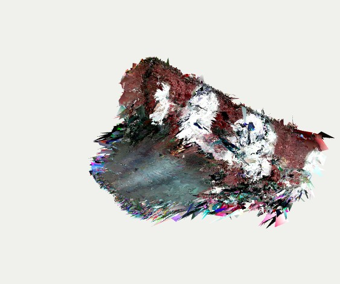
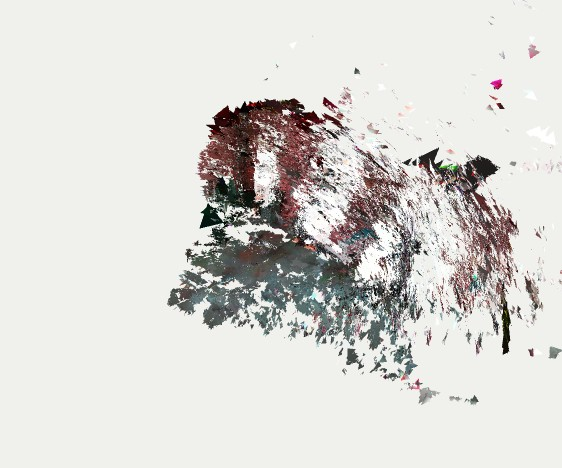

IROS 2026 Research project
LiDAR-Integrated Coarse-to-Fine Optimization for Geometrically Consistent Triangle Splatting from Mobile Robots
1 Purdue University2 Seoul National University
Paper overview
Robots need good geometry.
Mobile robots see a scene from limited viewpoints. High rendering quality alone does not guarantee an accurate surface.
Triangle Splatting jointly optimizes appearance and geometry. With limited viewpoints, however, its 2D primitives can tilt toward the camera and leave holes behind. We call this lazy optimization.
Our method initializes triangles from LiDAR mesh-SLAM, then refines them with LiDAR depth supervision and geometry-aware densification. This improves geometric consistency while maintaining high photometric quality.

Pipeline overview
From LiDAR surfaces to refined triangles.

Initialize from LiDAR surfaces
Use mesh-SLAM to provide a coarse but accurate starting mesh. Decouple its faces into optimizable triangle primitives.
Keep geometry anchored
Refine RGB appearance while LiDAR depth supervision constrains the surface. A normal prior helps guide local shape.
Densify using geometric errors
High depth-error variance guides cloning. High normal-error variance guides subdivision, adding detail where the geometry needs it.
Optimization process
Watch appearance and geometry evolve.
The same scene, two optimization processes. Compare the reconstructed surface and rendered image together.
Ours
Triangle Splatting
Press play to load the recordings.
Recorded optimization progress, not a wall-clock speed benchmark. Original timing is preserved; Ours holds its final frame while the longer TS recording continues.
Output mesh comparison
Look beyond the training view.
Inspect three scenes from synthetic and real-world mobile-robot datasets. Rotate either mesh to compare both from the same viewpoint.
Ours

Triangle Splatting

Preview images. Load the interactive comparison when you are ready.
Drag to rotate · Scroll to zoom · Right-drag to pan
Both methods share the same coordinates, camera, and framing. Web display meshes are compressed; open boundaries are preserved and holes are not repaired. The original reconstructions are used for the paper’s quantitative evaluation.
Replica: synthetic indoor scene. UTMM: RGB–LiDAR mobile-robot capture. NCD: Newer College quad-easy sequence.
Quadruped walking simulation
Geometry the robot can walk on.
Use the reconstructed mesh for collision detection in quadruped walking simulations.
Press play to load the recordings.
The GT recording uses the flat reference collision surface shown in the supplied demonstration. Clips retain their original timing and hold their final frames when finished.
Holes in the TS collision mesh can lead to unstable foot contacts. Our reconstructed surface supports more consistent contact, closer to the reference surface.
See the contact-height analysis in the paper ↗Citation
@inproceedings{yoon2026lidar,
title={LiDAR-Integrated Coarse-to-Fine Optimization for
Geometrically Consistent Triangle Splatting from Mobile Robots},
author={Yoon, Byoungkwon and Lee, Hojun and Sim, Yuseop and
Lee, Hangyeom and Lee, Dongjun and Jun, Martin Byung-Guk},
booktitle={IEEE/RSJ International Conference on Intelligent Robots
and Systems (IROS)},
year={2026}
}